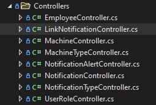

Machine Whisperer
Wat is de Machine Whisperer?
Met de MachineWhisperer is het mogelijk om met PLC's te communiceren en hieruit Notificaties te maken die vervolgens worden opgeslagen en goed beschikbaar zijn via een API. De mobiele applicatie toont vervolgens de data
-37e2ed35-08f4-41d7-8fb8-897c4ae1bb4c.png) Figuur 1 globaal overzicht
Figuur 1 globaal overzicht
Technische hoofdstukken
Overzicht van de onderdelen binnen het Machinewhisperer project:
De PLCInterpeter interpreteert data uit een de interne database van een PLC naar notificaties die in de PLCInterpreter kunnen worden ingesteld.
Backend
- Machinewhisperer API
- GraphQL service
Frontend
- Mobile applicatie
Instellingen
- GoMonta Personeelsplanning Taakverdeling voor rollen
- MontaPortal Instellingen scherm
- PLCInterpreter
In Figuur 1 is het overzicht van de backend en frontend van de applicatie, zonder instellingen om het overzichterlijker te houden. De MachineWhisperer API maakt gebruik van de database MontaMachineWhisperer op de server: mp-dev02.montapacking.nl. De API is vervolgens te vinden op https://machinewhisperer.monta.nl/api/swagger/index.html.
De Mobile app maakt, echter geen direct gebruik van de API. De mobile app maakt gebruik van de GraphQL service. Deze service is te vinden op https://machinewhisperer.monta.nl/graphql/. Hierdoor kan data uit meerdere API's gecombineerd worden tot een request.
De Mobile app is in Visual Studio te builden via de standaard manier om Xamarin apps te builden.
Plek op het net - waar is welk project?
- De projecten zijn opgeslagen in 4 repositories die op de Azure Devops van Monta zijn opgeslagen.
- MachineWhispererAndroid https://dev.azure.com/MontaDevelopment/Montapacking/_git/MachineWhispererAndroid (Development branch)
- MachineWhispererAPI https://dev.azure.com/MontaDevelopment/Montapacking/_git/MachineWhisperer (Development branch)
- MachineWhispererPLC https://dev.azure.com/MontaDevelopment/Montapacking/_git/MachineWhispererPLC (Development branch)
- MachineWhispererGraphQL https://dev.azure.com/MontaDevelopment/Montapacking/_git/MachineWhispererGraphQL (Development branch)
Daarbuiten zijn er nog drie Monta sites die zijn aangepast voor het instellen van verschillende instellingen.
- MontaPortal - Site waar binnen het WCS een settings knop is toegevoegd, deze pagina is nog niet afgemaakt en staat nog niet live, de niet afgemaakte versie is vindbaar op: click onder de branchnaam feature/machinewhisperer
- MontaRestAPI - Backend API, die gebruikt wordt om Personeelsdata uit de personeelsplanning te halen.
- GoMonta - Site, waar in de personeelsplanning OperatorRole aan een gebruiker kan worden gegeven. Video met instructies hoe een nieuwe operator kan worden toegevoegd is hieronder toegevoegd, het nummer is gelijk aan de UserRoleId uit de MachineWhispererAPI.
Hoe werkt het per Project?
###MachineWhispererAPI
MachineWhisperAPI is een .NET6 MVC project. de Models zitten in het Data project file, als aparte project file aangezien de models kunnen worden hergebruikt in de andere projecten (Maar dit gebeurt momenteel niet). De database wordt in deze applicatie benaderd en wordt a.d.h.v. Entity Framework met het Code First principe bijgehouden.
Al wil je de API testen kun je getters op https://machinewhisperer.monta.nl/api/swagger/index.html testen, of Posts doen. Bij posts moeten alle ID's ingevuld zijn met een bestaand ID, dus daar moet rekening mee worden gehouden voor het testen.

In de afbeelding hierboven is te zien welke Controllers er in het project zijn. In de rest van dit hoofdstuk wordt kort per Controller beschreven wat het doel is en wat extra informatie gegeven, als dat relevant is.
Employee is de user van de app. Belangrijkste attribuut is de MontaId, wat het Id is waarmee de gebruiker wordt opgezocht in de MontaRestAPI, daarbuiten wordt de naam van de employee opgehaald vanuit de personeelsplanning. Voorderest is de employee nog niet veel gebruikt aangezien er nog niet bij wordt gehouden wie welke notificatie op zich neemt.
LinkNotification wordt geset vanuit het MontaPortal instellingenscherm, hierin kan de description of het verantwoordelijke UserRoleId van een notificatie worden veranderd per afdeling.
Machine is de algemene data over een specifieke Machine.
MachineType is een groep Machines.
NotificationAlert is een ALERT, dit is een kort bericht die de noodzakelijkheid van een Notificatie kan aantonen: bijvoorbeeld een alert kan ERROR of WARNING zijn.
NotificationType is het type Notification, Het type notificatie wordt samen met de Alert in de PLCInterpreter per Notificatie meegegeven en verteld zo specifiek mogelijk wat de status van een machine is.
Notification is de klasse
UserRole is de manier hoe Users meestal worden benaderd, notificaties worden naar UserRoles gestuurd en niet naar individuele user bijvoorbeeld.
-e8ee99a8-a7d7-4107-92d9-1b93f1e1f368.svg) In de bovenstaande afbeelding is te zien welke manier de verbindingen tussen de Settingspage(MontaPortal) en de peroneelsplanning(GoMonta) zich verhouden. De settingspage veranderd de LinkNotification, waar per NotificationId kan worden ingesteld welke UserRoleId bij een NotificationId hoort. Echter is deze functionaliteit nog niet geheel geïmplementeerd, momenteel wordt data uit de LinkNotification nog niet gebruikt in het kiezen van de UserRole, wel wordt de LinkNotification aangemaakt, wanneer een nieuwe notificatie wordt gecreëerd.
In de bovenstaande afbeelding is te zien welke manier de verbindingen tussen de Settingspage(MontaPortal) en de peroneelsplanning(GoMonta) zich verhouden. De settingspage veranderd de LinkNotification, waar per NotificationId kan worden ingesteld welke UserRoleId bij een NotificationId hoort. Echter is deze functionaliteit nog niet geheel geïmplementeerd, momenteel wordt data uit de LinkNotification nog niet gebruikt in het kiezen van de UserRole, wel wordt de LinkNotification aangemaakt, wanneer een nieuwe notificatie wordt gecreëerd.
- Deployment
De deployment pipeline is op de MontaDevelopment Azure te vinden onder de naam "MachineWhisperer". De release pipeline is "MachineWhisperer_Prod" en is een gedeelde Release met de GraphQL Release pipeline. De API en GraphQL worden samen gehost onder hetzelfde webadres (https://machinewhisperer.monta.nl) intern worden ze gelijk gehost op het subdirectory /api en /graphql voor de API en GraphQL respectievelijk, hierdoor hoeft dat in de applicatie zelf niet te worden aangegeven, lokaal draaien de services daardoor niet op een subdirectory
GraphQL
GraphQL service is een query language, waardoor er gemakkelijk nieuwe requests kunnen worden gemaakt. De GraphQL service maakt gebruik van de MachineWhispererAPI en de MontaRestAPI (De API die o.a. de personeelplanning beschikbaar stelt) en combineert dit tot een request voor de client. Er is onderscheid tussen Queries en Mutations, dit is ook zichtbaar in de klasse in de app. In de Queries klasse zitten alle GET request en in de Mutations klasse zitten alle requests die data aanpassen.
Android Xamarin app
Xamarin Android applicatie is een MVVM project.
PLCInterpreter
PLC interpreter is een service die naar het IP van een aangesloten PLC kan luisteren en op basis van welke values er in de interne database van de PLC zijn kan worden ingesteld welke Type notificatie wordt verstuurd. MontaPLCControl is een algemene .sln dat het lezen van PLC's wat gemakkelijker maakt. De logica van de applicatie is te vinden in PLCInterpreter .sln. Belangrijk is dat het juiste type PLC wordt geselecteerd, bij het testen is de S7-1200 gebruikt.
Standaard kijkt de Interpreter naar de eerste 2 plekjes in de database memory of de value true of false is.
Todo lijst
###Mobile app
OidcCallbackActivity
in het project MachineWhisper.Android en de klasse OidcCallbackActivity wordt gebruik gemaakt van de DataScheme van de medewerkersapp, wat is gekopieerd uit de medewerkersapp. Dit werkt als het de enige app is op een telefoon. Maar is mogelijk niet wenselijk voor de toekomst, in dat geval moet de MachineWhisperer app een eigen Datascheme krijgen.
Een ander probleem is dat in de huidige versie als de MedewerkersApp en Machinewhisperer app beide zijn geinstalleerd blijft de telefoon vragen welke OidcCallbackActivity de gebruiker wilt gebruiken, die van de Medewerkersapp of van de Machinewhisperer. Waarschijnlijk kan dit ook opgelost worden door een eigen Datascheme te maken per app.
Notificatie Afronden
Momenteel is het afronden van een Notificatie gedaan door een button, vervolgens is de Notificatie inactief en dus verwijderd. De uiteindelijke oplossing vereist een oplospagina waar eventueel tekst en foto's kunnen toegevoegd bij het oplossen van een notificatie.
###MontaPortal
UI maken
In de Montaportal Settings page zijn pagina's en methodes aangemaakt voor het verwijderen en toevoegen van nieuwe machines en notificaties, echter is de UI nog niet aanwezig, buiten wat test UI. Dit moet nog worden geimplementeerd